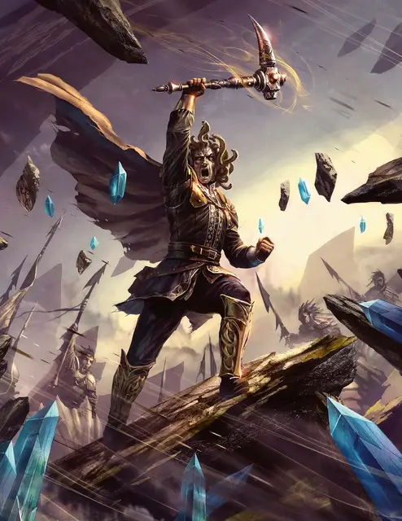

Марлос Урнрейл
Marlos Urnrayle
Средний Монстр, нейтрально-злой, именной НИП

Класс Доспеха 15 (природный доспех)
Хиты 136 (16к8 + 64)
Скорость 30 футов
| мод | спас | ||
|---|---|---|---|
| СИЛ | 17 | +3 | +3 |
| ЛОВ | 11 | +0 | +0 |
| ТЕЛ | 18 | +4 | +4 |
| мод | спас | ||
|---|---|---|---|
| ИНТ | 12 | +1 | +1 |
| МДР | 13 | +1 | +1 |
| ХАР | 17 | +3 | +3 |
Навыки Восприятие +4, Магия +4, Обман +6
Чувства тёмное зрение 60 футов, пассивное Восприятие 14, чувство вибрации 60 футов
Языки Общий, Терран
Опасность 8 (3900 опыта)
Бонус мастерства +3
Особенности
Посмертные объятия земли. Когда хиты Марлоса опускаются до 0, его тело превращается в грязь и растекается лужей. Всё, во что он был одет и что носил с собой, остается лежать в ней.
Проход сквозь землю. Марлос может перемещаться по труднопроходимой местности из любых видов земли или камней, не затрачивая дополнительное перемещение.
Он может передвигаться прямо сквозь землю и камень, как по труднопроходимой местности. Если он заканчивает свой ход в земле или камне, он перемещается в ближайшее свободное пространство, через которое он проходил до того, как погрузиться туда.
Легендарное сопротивление (2/день). Если Марлос проваливает спасбросок, он может вместо этого сделать спасбросок успешным.
Окаменяющий взгляд. Если существо, видящее глаза Марлоса, начинает свой ход в 30 футах от него, Марлос может заставить его совершить спасбросок Телосложения Сл 14, если Марлос в этот момент дееспособен и может видеть это существо. Если спасбросок провален на 5 или больше единиц, существо мгновенно становится окаменевшим. В противном случае, провалившее спасбросок существо начинает превращаться в камень и становится опутанным. Опутанное таким образом существо должно повторить спасбросок в конце своего следующего хода, становясь окаменевшим при провале или оканчивая эффект при успехе. Окаменение длится до тех пор, пока не будет использовано заклинание высшее восстановление [greater restoration] или другая подобная магия.
Если существо не захвачено врасплох, оно может отвести взгляд, чтобы не совершать спасбросок в начале хода. В этом случае отводящее взгляд существо до начала своего следующего хода не видит Марлоса. При этом на следующем ходу существо снова может отвести взгляд.
Если же существо в течение хода посмотрит на Марлоса, оно должно немедленно совершить спасбросок.
Если Марлос увидит своё отражение в полированной поверхности в 30 футах от него в ярко освещенной области, Марлос, из-за своего проклятия, попадет под действие собственного взгляда.
Действия
Мультиатака. Марлос совершает три рукопашные атаки, одну с помощью своих змей-волос и две Железным Клыком.
Змеи-волосы. Рукопашная атака оружием: +6 к попаданию, досягаемость 5 фт., одна цель. Попадание: колющий урон 7 (1к8 + 3) плюс урон ядом 14 (4к6).
Железный Клык. Рукопашная атака оружием: +8 к попаданию, досягаемость 5 фт., одна цель. Попадание: колющий урон 9 (1к8 + 5) плюс урон звуком 4 (1к8).
Логово
В узле земли. Когда храму Чёрной Земли угрожает опасность, Марлос отступает в Чёрную Жеоду к узлу земли.
Здесь Марлос получает дополнительное использование своей способности «легендарное сопротивление».
Действия логова
Если Марлос находится в узле земли, без Огремоха, он может использовать действия логова, а его показатель опасности увеличивается до 12 (8400 опыта). При значении инициативы «20» (в случае ничьей проигрывает всем конкурентам) он может использовать действие логова, чтобы наложить заклинание землетрясение [earthquake] без использования компонентов. Пока он поддерживает концентрацию на землетрясении, его инициатива в раунде остается равной 20. Он не может совершать иных действий логова, пока концентрируется на этом заклинании.
Вторая способность Марлоса в логове — получение энергии от узла земли для лечения. Он может действием логова восстановить 30 (6к8 + 3) хитов.
Описание
Марлос Урнрейл — пророк земли на службе у Элементального Зла и лидер культа Чёрной Земли в холмах Самбер. Некогда бывший тщеславным и жестоким дворянином, он превратился в медузу необычайной силы. Марлосу доставляет истинное наслаждение превращать своих врагов в камень (особенно тех, кто обладает красивой внешностью), а затем разбивать эти статуи.
Марлос вооружён волшебной боевой киркой под названием Железный Клык. Он нашел её в святилище Ока, куда его привели видения. Служители Чёрной Земли верят, что и проклятье, превратившее Марлоса в медузу, и обретение им элементального оружия — это знаки благосклонности Огремоха, и поэтому все они фанатично преданы своему лидеру.